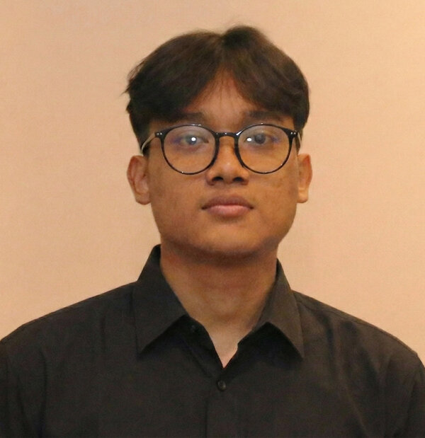
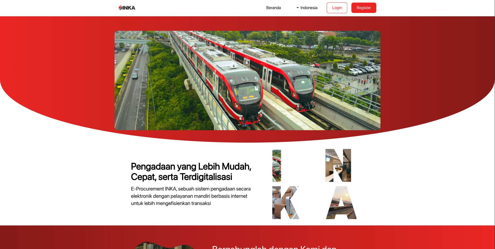
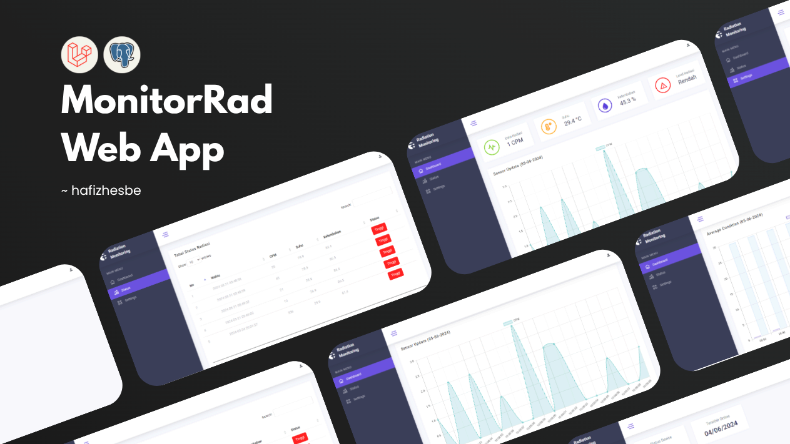
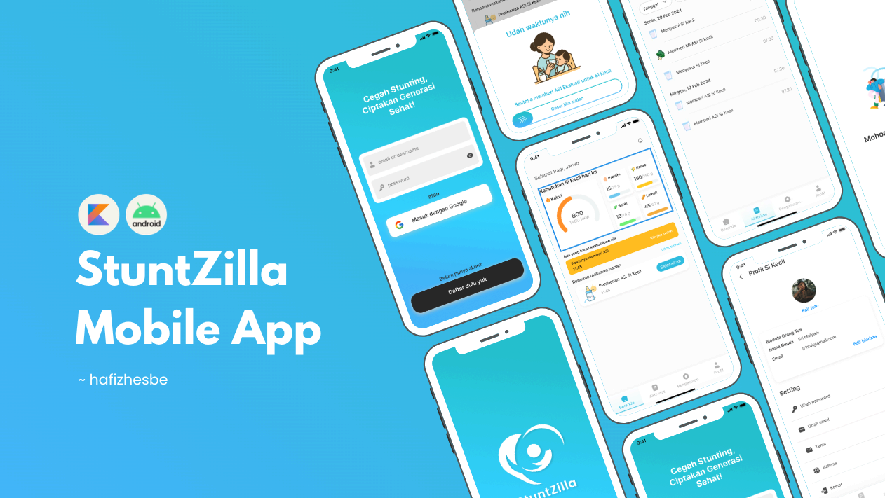
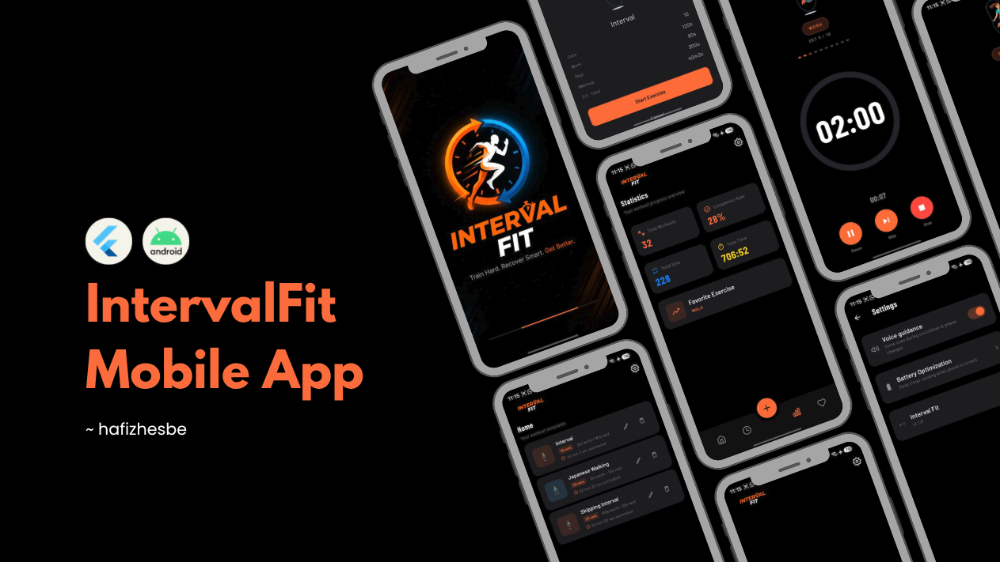

Software Developer & Problem Solver
Lulusan D3 Teknologi Informasi dengan pengalaman langsung menangani troubleshooting, instalasi, dan konfigurasi sistem: dari proyek IoT, pengembangan aplikasi, sampai operasional lapangan.

Dua sisi yang saling melengkapi
Saya memulai karier dengan tangan langsung di lapangan, menangani hardware, jaringan, dan dukungan pengguna di berbagai proyek, mulai dari IoT hingga konstruksi. Dari situ saya terbiasa mendokumentasikan pekerjaan secara terstruktur dan berkoordinasi lintas tim untuk menyelesaikan masalah teknis.
Di sisi lain, saya juga membangun software: dari sistem administrasi pemerintah daerah dengan Laravel, dashboard internal dengan Symfony, sampai aplikasi mobile Android. Kombinasi ini membuat saya nyaman berada di posisi yang butuh troubleshooting cepat sekaligus pemahaman teknis yang lebih dalam.
D3 Teknologi Informasi
Politeknik Negeri Madiun · 2021–2024
Riwayat kerja
Urut dari yang terbaru: kombinasi peran operasional/IT support dan pengembangan software.
- Mengelola pengadaan, pencatatan, dan distribusi material untuk dua proyek konstruksi PT. Marina Bara Lestari di Kecamatan Segah, Kabupaten Berau.
- Monitoring rutin ketersediaan dan kondisi peralatan/material untuk kelancaran operasional proyek.
- Koordinasi dengan tim lapangan dan manajemen untuk dokumentasi serta pelaporan logistik tepat waktu.
- Memberikan dukungan IT dasar on-site, termasuk troubleshooting komputer/printer kantor lapangan dan isu jaringan harian.
- Mengintegrasikan sistem hardware & software untuk proyek IoT, termasuk membangun dashboard monitoring dengan tools Advantech.
- Troubleshooting dan konfigurasi perangkat untuk mengembangkan solusi berbasis IoT dan optimasi sistem monitoring.
- Menyelesaikan bootcamp intensif untuk memperdalam skill pengembangan Android.
- Bekerja dalam tim membangun StuntZilla, aplikasi mobile untuk deteksi gejala stunting.
- Mengembangkan website Simag untuk Kominfo Ngawi menggunakan Laravel untuk manajemen tugas administratif.
- Membangun sistem e-Ticketing untuk Kominfo Ngawi menggunakan Laravel untuk manajemen event dan data pengguna.
- Mengembangkan dashboard website INKA-CSIRT untuk manajemen artikel menggunakan Laravel.
- Enhance & maintain fitur website e-Procurement INKA dengan Symfony, menangani 50+ akun vendor termasuk resolusi isu akses pengguna.
- Berkolaborasi dengan tim IT untuk pengembangan fitur guna mencapai target pengguna.
Proyek pilihan
Detail proyek sedang disiapkan: sementara ini bisa dilihat langsung di GitHub.

INKA - e-Procurement
Website untuk procurement online, menangani 50+ vendor account termasuk resolusi akses pengguna.

MonitorRad
Website monitoring radiasi B3 dengan sistem early warning via Telegram bot.
View on GitHub →
StuntZilla
Aplikasi mobile untuk deteksi gejala stunting.

IntervalFit
Interval timer cepat setup, mudah dibaca saat olahraga, dengan voice countdown otomatis.
Repository lain tersedia di GitHub.
Kemampuan
{
"Technical Support": [
"Troubleshooting hardware & software",
"Instalasi aplikasi",
"Konfigurasi sistem",
"Remote support",
"Jaringan komputer dasar"
],
"Bahasa Pemrograman": [
"PHP",
"Kotlin",
"JavaScript",
"C++"
],
"Tools & Sistem": [
"Laravel",
"Symfony",
"Advantech Monitoring"
],
"Soft Skills": [
"Kolaborasi tim",
"Komunikasi pengguna",
"Berpikir kritis",
"Manajemen waktu",
"Problem solving"
]
}